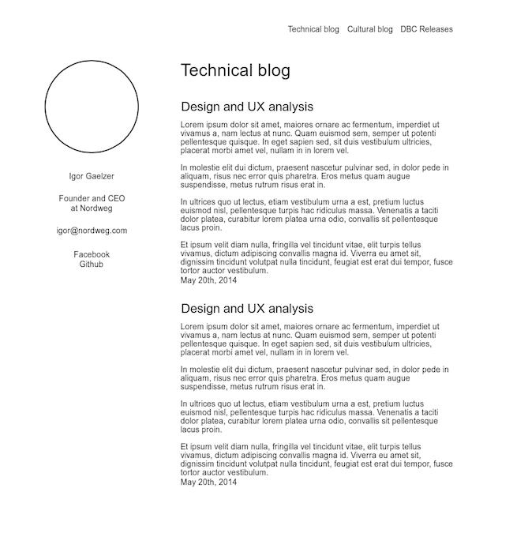

Planning and wireframing my own site
It`s time to get this site in better shape! In this post I'm going to be making a design and usability plan for my site, and to better understand my needs I'm going to be asking myself a couple questions:
Questions to ask myself
What is this site for?
This site is inteded to be a place to organize and have easy access to my work and the blog posts I write during the course at Dev Bootcamp.
Who is going to access it?
My Dev Bootcamp classmates, teachers and myself.
What further information might people wanna know about me?
Other than the content posted on this site, people might also want to know my email, my Facebook page, my Github profile, where I live and what I do for work.
In what kind of devices is this site going to be accessed from?
As most websites today, my website might be accessed from many types of devices, like smartphones, tablets, desktops and TVs. This site should be adaptable to different screen sizes.
What kind of design style do I like best?
I think minimalistic design is the way to go. It focuses on the content, it's lightweight and runs smoothly on any device, it's easier to deal with when making it responsive and, if well done, it`s simple and pleasurable to look at.
How much time do I have available to get this done and how to manage it so I can ship a good site on time?
All improvements made to this first version of the site should be made in no more than three hours.
Wireframe
My website will be made of basically three sections - The header with the navigation links and the page title, the sidebar with my personal information, and the main content area.